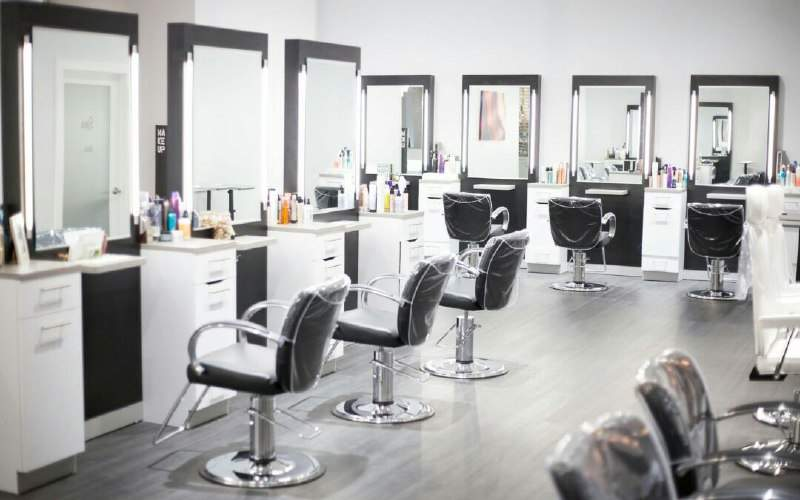
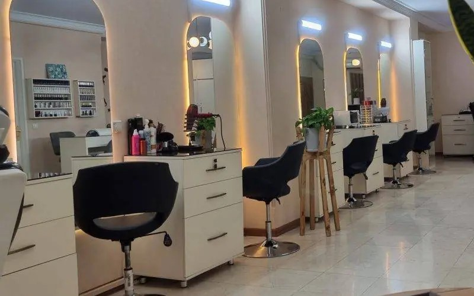

امروزه شاهد گسترش فعالیت های سالن های زیبایی و آرایشگاه های زنانه در سطح کشور هستیم.سالن های زیبایی کوچک
و بزرگ، با پرسنل کم و یا زیاد و… اما در این بین سوال اصلی اینجاست که کدام از سالن های زیبایی که امروزه
در حال فعالیت هستند، معتبر تر هستند؟ لازم به ذکر هست که آرایشگاه زنانه خانه عروس با سابقه بالای فعالیت
خود و اخذ مجوز های لازم از اتحادیه آرایشگران و همچنین تعیین نرخ های مصوب اتحادیه برای خدمات خود همراه با
داشتن پرسنل با تجربه و محیطی شاد، آرام و بهداشتی معتبر بودن خود را همواره ثابت کرده و مورد اعتماد
مشتریان قرار گرفته است. رسالت آرایشگاه زنانه و سالن زیبایی خانه عروس ، ارائه بهترین خدمات آرایشی و
بهداشتی با بهترین کیفیت و کمترین قیمت ممکن به مشتریان عزیز خود می باشد.

کادر مجرب ، دارا بودن مجوز های بهداشتی رعایت بهداشت محیطی و بهداشت فردی در سالن ، ضد عفونی کردن ابزار بعد
از هر استفاده ، رضایت مشتری ها ، حسن شهرت ، خوش قولی ، برخورد مناسب مدیر سالن و سایر کارکنان ، مشاهده ی
نمونه کارهای قبلی و… فاکتور های زیادی برای تبدیل شدن یک سالن زیبایی به برند معتبر وجود دارد و یکی از
مهمترین آن ها، پرسنل آرایشگاه هستند. در آرایشگاه زنانه خانه عروس تمامی پرسنل با سابقه فعالیت و تجربه
بالا مشغول به کار هستند. گفتنی است که پرسنل آرایشگاه خانه عروس همگی مجرب بوده و بهترین کیفیت در لاین های
مختلف خدمات را به شما ارائه میکنند